ARCHA4144 Research Foundation + Project Outline
© 2025 Patrick Rodriguez. All rights reserved.
Title
PHASE 1. Open Material Library: A BIM Plugin for Circular Substitution Assessment
Designing with locally available, reusable materials to reduce environmental impact
PHASE 2. Material Memory Library: A BIM Plugin for Encoding Cultural Metadata¹
Designing with materials that embody place, heritage, and significance
1Dual Degree Capstone project extends over a two-year period.
Project Timeline
Phase 1 , Phase 2 , Toolkit .
Research Questions
How can BIM's material intelligence be reimagined beyond efficiency driven algorithms to support considerate architectural decision making?
On Open Material Library...
How can open-source data on local material availability be integrated into BIM systems to promote material reuse and reduce carbon impact in real-time design workflows?
What methods can be developed within BIM to algorithmically suggest circular substitutions without compromising structural performance or design intent?
To what extent can computational tools empower designers to make ecologically responsible decisions?
On Memory Material Library...
How can BIM evolve from a tool of efficiency into a platform for preserving and disseminating cultural knowledge through material selection?
What forms of historical, archaeological, and social data are necessary to define a material's cultural significance? How can these be encoded into digital architecture tools?
What ethical responsibilities arise when using computational systems to represent cultural memory, and how can we avoid reductive or tokenized applications of heritage data?
Keywords
Material Intelligence
Refers to how digital elements in BIM, like a wall, "know" they are walls through embedded data, material type, thickness, fire rating, and cost.
Building Information Modeling (BIM)
A digital process that creates and manages 3D building models containing intelligent data about physical and functional characteristics. BIM enables architects, engineers, and contractors to collaborate using shared digital representations that include geometry, spatial relationships, material properties, and project lifecycle information.
Circular Construction Economy
Low-impact building by prioritizing material reuse and local availability.
Contextual/Critical Design
A design philosophy that questions the prioritization of efficiency over cultural, social, and environmental factors. It emphasizes understanding local conditions, power structures, and diverse value systems rather than applying universal solutions.
Efficiency Bias
The systematic tendency to prioritize speed, cost reduction, and resource optimization as primary measures of design success, often at the expense of cultural significance, environmental sustainability, social equity, and creative exploration. This bias can lead to homogenized solutions that ignore local context and community needs.
Attributes
In BIM systems, attributes are data properties assigned to building elements that define their characteristics, behaviors, and relationships. These include geometric properties (dimensions, location), material properties (thermal conductivity, strength), functional properties (load-bearing capacity), and metadata (cost, supplier, installation date).
Intersecting Fields
01. Sustainable Architecture, 02. Building Information Modeling (BIM), 03. Smart Building Systems (IoT)
Historical Lineage
My work emerges from the revolutionary advancements made in Virtual Design and Construction methodologies, building on their potential while aligning with the growing momentum around sustainable and environmentally conscious architectural thinking. Whether or not one fully believes in the sincerity of designing “for good,” the trend is undeniably present across firms and platforms. This project takes VDC as a critical backbone—acknowledging its capacity for precision and coordination—while expanding its capabilities toward material insightfulness: to design in ways that are more local, more cultural, and more contextually responsive.
Virtual Design & Construction Using BIM Current & Future Practices
by Lennart Anderson, Kyla Farrell, Oleg Moshkovich, Cheryle Cranbourne

"Centralization mitigates problems associated with the fragmentation of data inherent in the traditional design and construction process...minimizing the risk of misunderstandings and subsequent conflicts" pg.2
"Real-time systems that track the state and location of materials, possess the ability to dynamically control automated construction robots, and interface with various sensors will substantially optimize construction...some of the technologies and concepts mentioned already exist in one form or another, either within the AEC industry or within other industries...it is when these tools are integrated with existing AEC workflows that the full potential of VDC will be unlocked" pg.261
"By synching and linking data, we can potentially obtain a cohesive understanding of how 'things' are interconnected—from a molecular level to the scale of an entire city, or even the globe" pg.264
"[Speculating on the future of VDC]...A Revit plugin connects building components to material database, so short feedback loops can inform the designer about the environmental impact of different material selections" pg.272
"Traditional tools [for construction] are fragmented and not sufficient in describing the complex buildings of today and tomorrow...successful implementation of VDC is hinging on how well developing technologies interact with design and construction needs" pg.274
"Buildings should not be solely defined by the sum of their parts, but by the parts and assemblies themselves and their roles within greater systems and processes—from conception, 3-D creation, through to construction and facilities management" pg.274
An Introduction to Visual Theory and Practice in the Digital Age
by Brooke Barnett, David Copeland, Harlen Makemson, Phillip Motley

"Convergence is more or less assumed at this point, it's simply part of the medium" pg.5
"Data driven content management systems...allow content authors a way to distribute information without needing to understand the technical intricacies of Web development" pg.5-6
"How does the interface...between your audience and the content you want them to digest affect their ability to do so?" pg.11
"Clients and organizations...will demand that the content...be technically sophisticated and visually compelling" pg.164
Graph Vision: Digital Architecture's Skeletons
by Theodora Vardouli
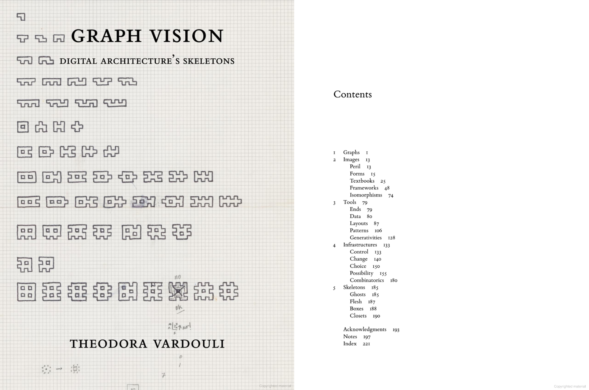"One might be tempted to interpret digital architecture's reliance on skeletal structures as an effect of how digital electronic computers work. This book rejects the proposition that the dovetailing of architecture and structural abstraction—on a cultural, discursive, and operational level—is an effect of digital computers' technical functioning. Instead, it contributes a multifaceted story of architects' turn toward the structural underpinnings of their work as the very condition that made it possible to consider architectural design as a form of computation" pg.2
"...while this coda could not possibly characterize architecture's digital 'culture,' 'turn,' era, age, epoch with any semblance of historical or analytical precision nor foretell its fast-changing futures, it can discern the absences that construct it: the things that have been lost and those that have been hidden" pg.185
Your Community of Practice
The sustainable design community is addressing material transparency through three primary approaches: editorial curation that elevates material discourse through storytelling, systematic tracking frameworks for circular economy implementation, and technical integration of manufacturer data into design workflows. These approaches represent crucial progress toward democratizing material knowledge and enabling informed sustainable decisions at scale. There is also increased pressure for large architecture firms to adopt sustainable and ethical practices as the conversation on construction has shifted to emphasize embodied carbon, lifecycle assessments, and regulatory compliance with emerging environmental standards. There is also incredible opportunity to develop tools that integrate more nebulous aspects of the world of ethical design.
CASE STUDY 1. Material Matters
by Grant Gibson and William Knight
Material Matters is a cross-media platform that explores the vital role of materials in shaping the future of architecture, design, and manufacturing. Through the internationally acclaimed Material Matters Podcast, the renowned Material Matters Fair, and industry-leading consultancy and special projects, Material Matters connects brands, designers, and manufacturers with a forward-thinking audience passionate about material innovation.
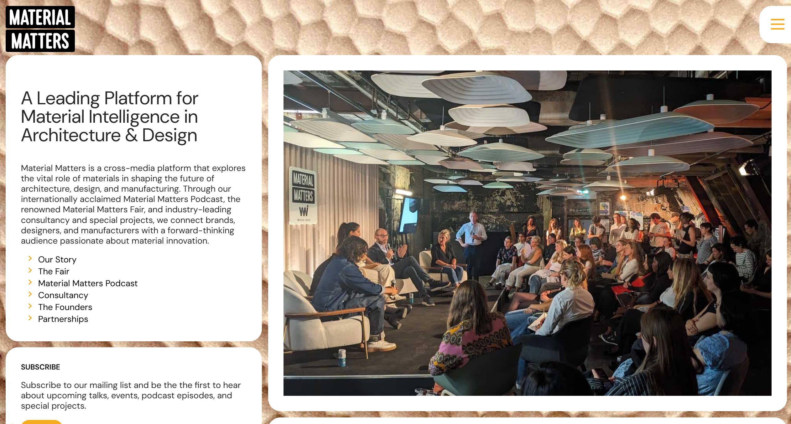CASE STUDY 2. Madaster
by Thomas Rau and Pablo van den Bosch
Madaster believes that lasting change starts with redefining waste. They believe that every material holds value and can be reused endlessly, helping create a world where sustainability becomes the standard, not the exception. They offer services in reducing carbon footprint, enabling circularity, calculating residual value, and unlocking regulatory compliance.
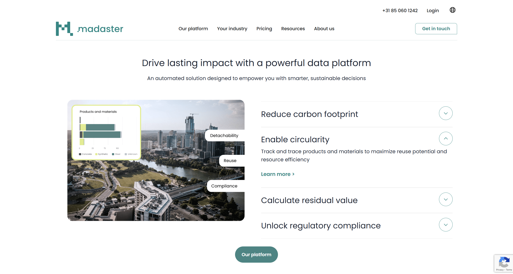CASE STUDY 3. Construction Material Library for EU
by FlowBIM
A comprehensive digital database containing manufacturer-specific building material data including density, thermal conductivity, and thickness specifications. This resource enables direct integration of real material parameters into wall components with automatic U-value calculations that adjust dynamically as materials or thicknesses change. The library features thickness selection filters for optimal material combinations, manufacturer datasheet links for additional information, and bilingual support in English and Estonian while maintaining consistent coverage across EU countries.
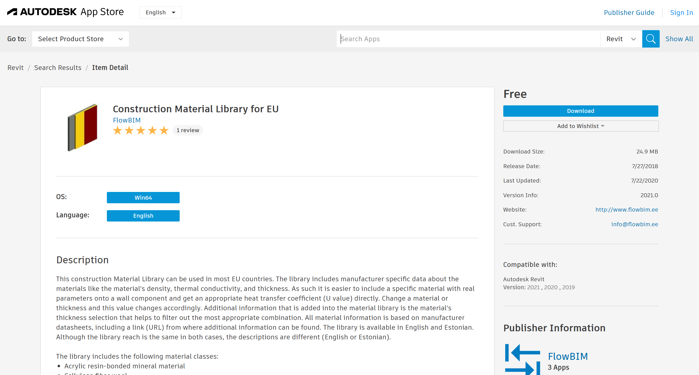https://apps.autodesk.com/RVT/en/Detail/Index?id=6825140766630953113&appLang=en&os=Win64
HAQUE TAN. Precedent Study Connection
My precedent study primarily helped me think about how software can facilitate collaboration between multiple people to complete a collective task. In the context of my capstone, API databases of local materials are the "people" that can be accessed by the user to make informed creative decisions. I am also taking inspiration from the philosophy HAQUE TAN has: "Designing for Shared Futures".
Situated Technology
My approach to computational design practice emphasizes creativity in combining existing software and tools to achieve novel insights. However, I believe this requires critical precision and deep understanding to avoid perpetuating harmful biases embedded in current systems. By carefully analyzing existing software and understanding what works, what fails, and what remains absent, we can develop intelligent systems that genuinely benefit humanity. I have been significantly influenced by Google's sophisticated methods for predicting user behavior in personalized advertising, which demonstrate both the potential and risks of data-driven design. At the forefront of my capstone development, I am actively considering these ethical questions and carefully crafting an approach to computational design practice that maintains high standards of social relevance and responsibility.
Below is my active whiteboard. A space I used for ideating, designing, and brainstorming.
Methods
Computational design and data-driven modeling techniques are becoming increasingly central to architecture, particularly through BIM's adoption as a global standard within the construction industry. I am interested in leveraging open-source material databases, spatial metadata, and circular economy datasets to explore how building elements can become context-aware and materially responsive. The project's conceptual foundation draws from theoretical frameworks in sustainable architecture, systems thinking, and material ecology. Aesthetically, the work embraces utilitarian and systems-based approaches, where visual clarity and layered information become central to architectural expression. I plan to employ both qualitative and quantitative methods to evaluate spatial and material narratives alongside data-driven recommendations and mapping. The project's critical components include system/software management to enable cross-computational logic to function. User interface and experience design will become paramount during the plugin development phase.
Computational Design Experiments
ARCHA4163 Computational Design Workflows
Although the data of NYC drinking fountains is not particularly relevant, this assignment has helped me learn the basics of API integration, handling large data sets, and the utilization of tools like Mapbox to create a cohesive and interactive representation of open-data.
Below is my interactive map submitted for Geo-Spatial Structures: NYC Parks Drinking Fountains.
ARCHA4162 Computational Modeling
Learning Grasshopper's visual coding interface is great practice for eventually using Dynamo for Revit and data management. On top of that, the custom tool for Computational Modeling can serve as a "proof-of-concept" where it can perform a preview of the Open Material Library tool, but it is largely for demonstration purposes rather than a software that I will continue to use in my capstone.
Below is my custom tool in Grasshopper that is a proof of concept for PHASE 1 of the capstone project.
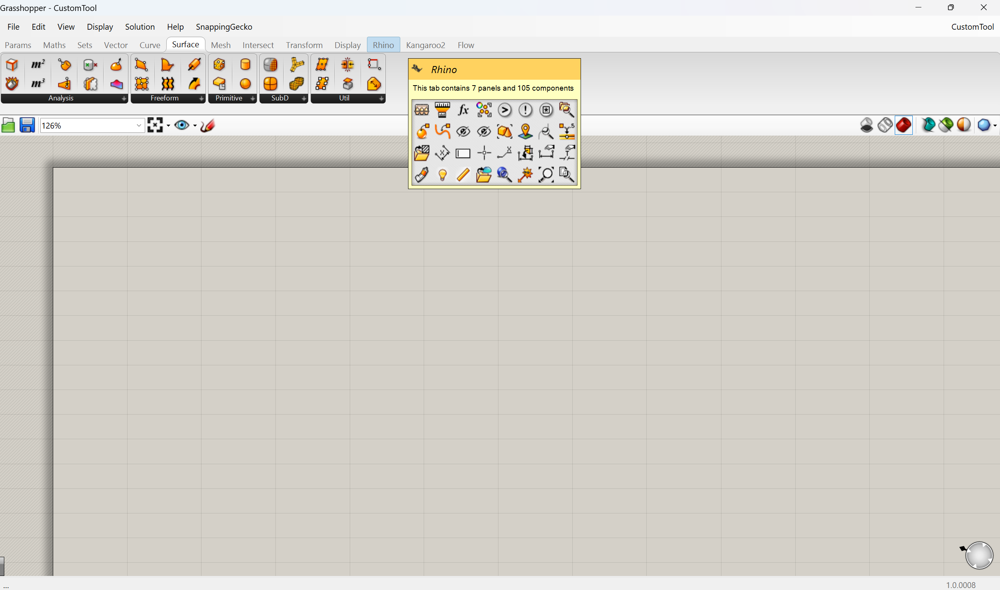Visual Representation
The project's scope requires a cohesive visual language that extends from urban mapping visualizations to the user interface elements within the Revit plugin. Additionally, presenting the large raw datasets from open-source projects through visually engaging representations would enhance transparency by making the algorithm's sorting and filtering mechanisms clearly visible to users, fostering trust and understanding in the underlying computational processes.
CASE STUDY 1. Material Locale
by Zihan Xiang, Jun Yue, and Jiaxin Yue

https://bpro2023.bartlettarchucl.com/rc1-monumental-wastelands-hyper-local/material-locale
CASE STUDY 2. NYC Building Materials
by Hao Lee
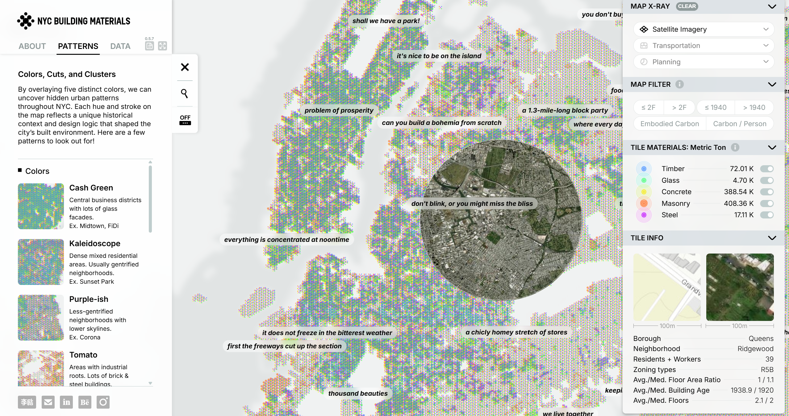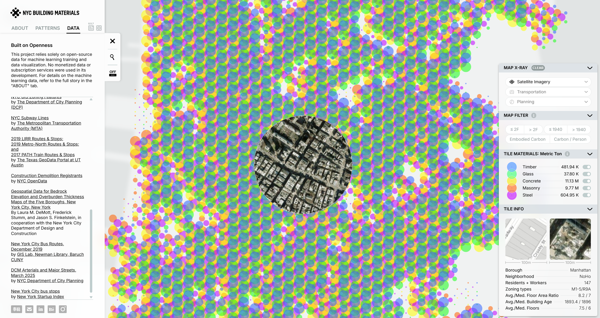
https://gsapp-cdp.github.io/archive/projects/2025/nyc-building-materials/
CASE STUDY 3.
by Lin Qi, Yuwei Wang, Jindong Chen, Mengjie Liao, Jian Zhang
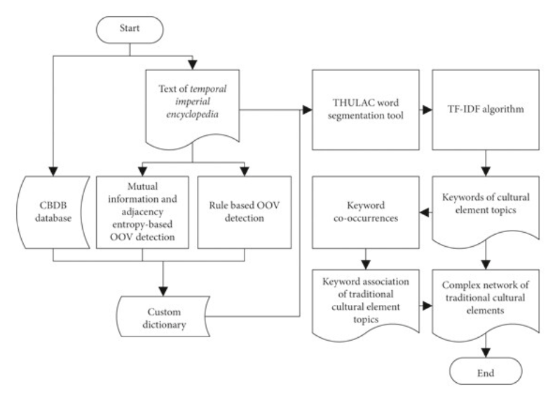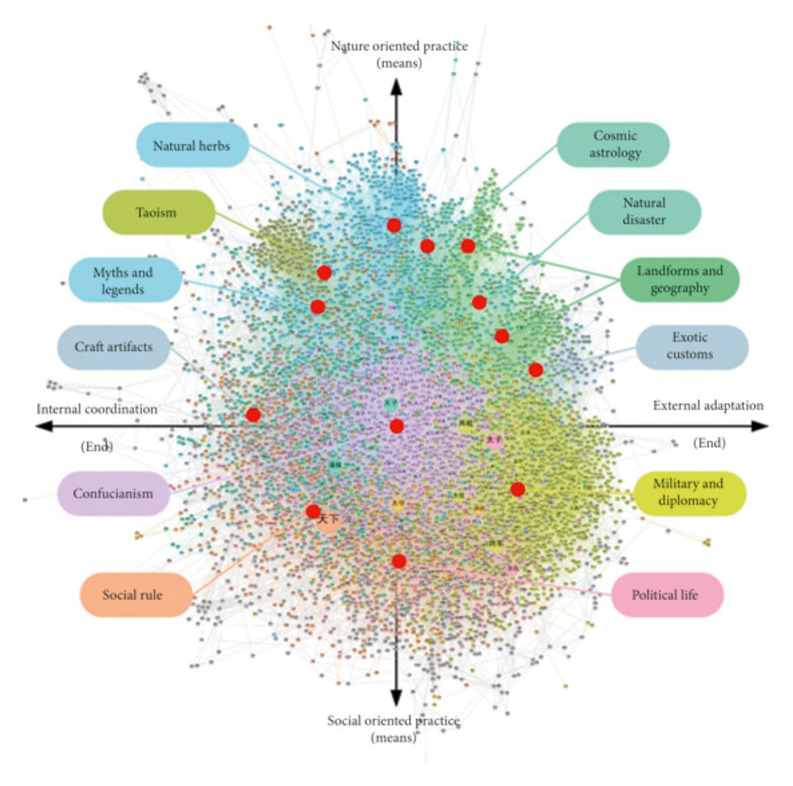
Rhetorical Argument
I am arguing that digital design tools, especially BIM, must evolve from being static dictionaries of what is built to becoming parametric platforms for how we can build better. My project proposes adding more dimensionality to BIM, encouraging material ethics. Through this, I argue that buildings should no longer be assembled from abstracted, globally-sourced catalogs, but instead be rooted in the specific, often overlooked resources of their context like reused brick, salvaged timber, or urban waste. Design becomes not just form-making, but decision-making: a process where each type of wall or window is chosen not only for performance, but for provenance.
By embedding circular material intelligence and locality-aware logic into the digital modeling process, I make the case for a future where BIM tools do not just document the building, they can be a critical tool for designers to design more considerate. This is not just about efficiency, sustainability, or aesthetics. It is about redefining digital architectural intelligence itself, shifting to material responsibility.
Capstone Project Proposal
Material InSite©
A context-encoded Revit plugin to build a more considerate architecture.
WORK IN PROGRESS...mention talk with Vik, MVP analysis, open data, late stage pricing models
VDC Tools and Future Trends
Model Authoring Tool , Fields of Study and Collab Tools , Capstone: Material InSite , Post-Production Tools .
8/6/2025 Drawing Type
To deepen my understanding of the data trees and exchange protocols operating within and between the project's various tools, I plan to create a comprehensive diagram that adopts the visual language of web-flow diagrams and Actor-Network Theory diagrams introduced in Computational Design Workflows. This visualization will map how these systems interact and interconnect, providing me with clearer insight into the project's technical architecture and dependencies. Bellow is an example of the complexities of BIM and how I could use the large pool of existing documentation to craft a more interconnected and focused diagram for my particular interests.
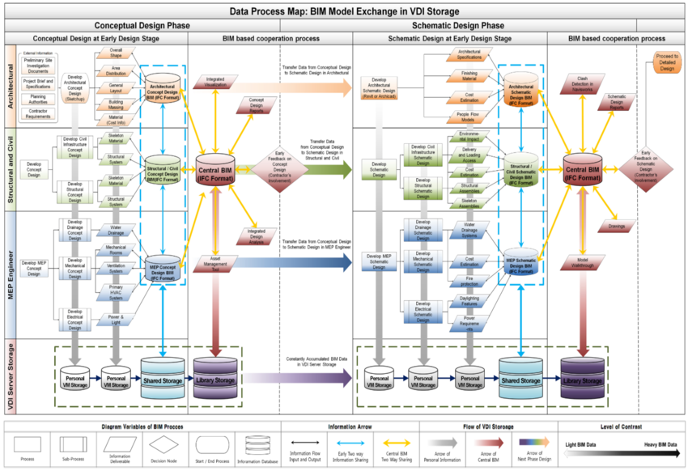BIM Environment Based Virtual Desktop Infrastructure (VDI) Resource Optimization System for Small to Medium-Sized Architectural Design Firms.
by Kyuhyup Lee, Joonghwan Shin, Soonwook Kwon, Chung-Suk Cho.

Poster
8/6/2025 Material Gesture
For my material gesture, I plan to source raw material ready-mades from local marketplaces that specialize in salvaged, scrap, and reclaimed wood, brick, and steel. I will present these materials in an exhibition-style display, positioning each piece against a backdrop featuring a printed Revit properties panel with a Photoshopped section that speculatively showcases the cultural metadata of each material.
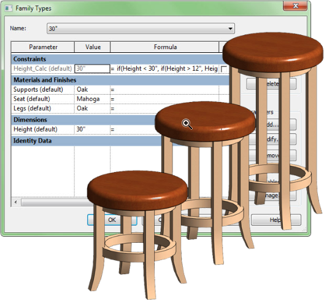Parametric Families.
by Michael Anonueno.
Exposed Material.
by Virginia Leonard.
Revit Properties Dialogue Box.
by Shaun van Rooyen.
The Challenge
Looking at the project toolkit honestly, I recognize that while my design background and undergraduate Python experience give me a solid foundation, I will be facing some significant technical integration challenges ahead. The biggest gap I need to address is connecting all these tools effectively. As of now, I can work with most as individual platforms, but getting machine learning outputs from Python to integrate with C# and Revit Dynamo requires extensive knowledge of data exchange protocols and APIs that I am still learning. The machine learning component is probably where I am most out of my depth; I know the theory and some math behind it, but I need to develop a much stronger understanding of the underlying algorithms, proper data preprocessing, and model validation if I want to apply this meaningfully to my project. Over the next couple of semesters, I should prioritize getting comfortable with C# and the Revit ecosystem, really using Autodesk's and the larger community's extensive publicly available tutorials to shift my focus onto C# as my coding language of choice. I also need to focus on the conceptual challenge of translating my design thinking into algorithmic processes and asking the right questions. This is where my dual degree should pay off, as it blends the architectural world, computational logic, and ethical frameworks found in the fields of study. My goal is to build fluency in cross-platform workflows rather than just competency in individual tools.
Designing a plugin for Revit may just be the perfect marriage of these interests since I will become more technically adept while also becoming incredibly comfortable using one of the primary tools of licensed architects. I am incredibly excited to start this two-year journey since I will be surrounded by incredibly talented professors in back-end development, custom plugin creation, and entrepreneurial know-how.
Credits
Vibe Coding Tools
Chat GPT, Claude Pro, Perplexity AI, Github Copilot, Cursor
Code Resources
Three.js, P5.js, D3.js
Research
Google Search, Wikipedia, Stack Overflow, MDN Web Docs, GitHub, CLIO Avery Library
Design and Assets
Figma, Miro, Adobe Creative Suite
Development Environment
VS Code, Chrome DevTools, Git, npm
Hosting and Deployment
Github Pages, Firebase
Additional Resources and References
https://gramaziokohler.arch.ethz.ch/web/news/e/actualNews/0/0/0.html
https://gramaziokohler.arch.ethz.ch/web/news/e/actualNews/0/0/0.html
https://bpro2023.bartlettarchucl.com/rc1-monumental-wastelands-hyper-local/material-locale
https://www.philipbeesleystudioinc.com/sculptures/
https://kilthub.cmu.edu/collections/Master_of_Computational_Design/5279693
https://dbt.arch.ethz.ch/publication/
https://forensic-architecture.org/investigation/tear-gas-tuesday-in-downtown-portland
https://cyberneticzoo.com/robots-in-art/1969-70-seek-nicholas-negroponte-american/
https://haquetan.com/growing-riversiders/
https://www.dear-data.com/theproject
https://michael-hansmeyer.com/projects
https://www.interactivearchitecture.org/
https://www.matterdesignstudio.com/#/patty-jan/
https://starts-prize.aec.at/en/winners/winners2025/
https://gsapp-cdp.github.io/archive/
https://bpro2023.bartlettarchucl.com/rc1-monumental-wastelands-hyper-local/vernacular-contract
https://www.autodesk.com/support/technical/article/caas/tsarticles/ts/7I2bC1zUr4VjJ3U31uM66K.html